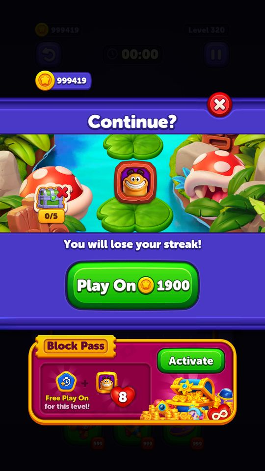
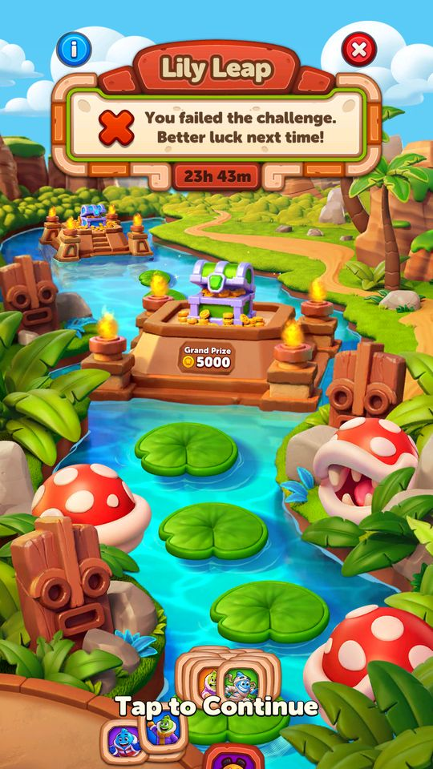
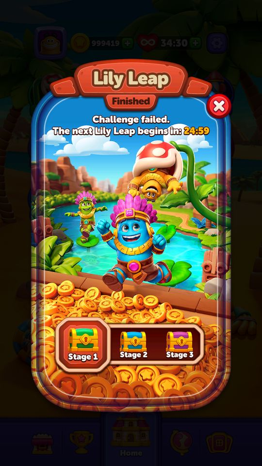
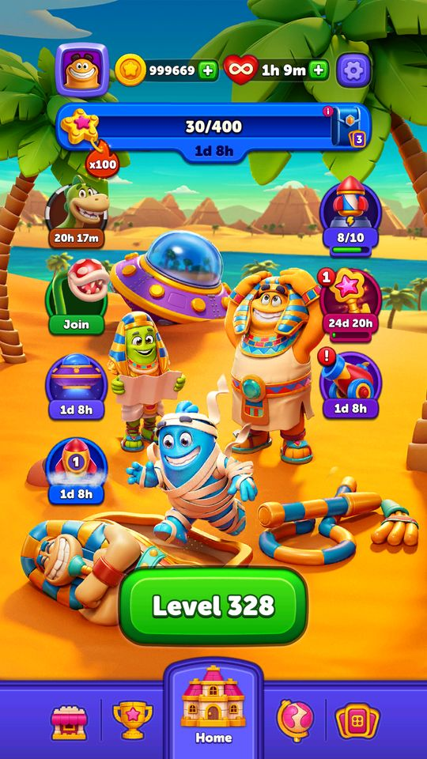
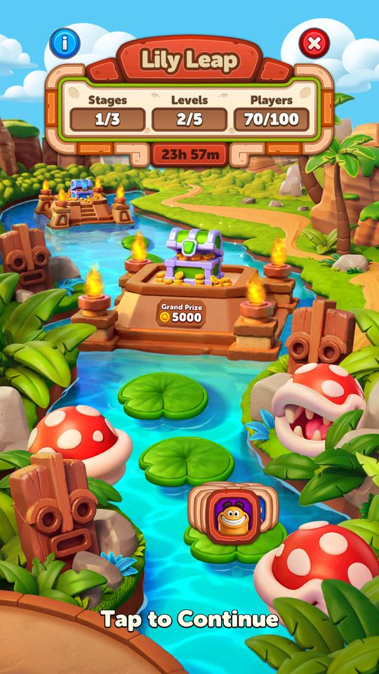

Ảnh chụp màn hình
Sự kiện ba chặng giống Jetpack Race về cấu trúc nhưng thưởng thuần coin và mốc mở sớm hơn.
Mô tả
- Sự kiện ba chặng giống Jetpack Race về cấu trúc nhưng thưởng thuần coin và mốc mở sớm hơn.
- Thư mục Home/SkyJump (bản cũ) vẫn còn trong code bên cạnh Home/SkyJumpWithStage (bản đang dùng).
Còn thiếu / chưa xác minh
Mở khóa & điểm vào
SkyJumpWithStageConfigModel.FirstLevelToShow = 40, IsEnabled = true, EventType = 1.
Điểm vào:
- Biểu tượng Sky Jump ở Home
Cách hoạt động
- Cùng khuôn với Jetpack Race: SkyJumpWithStageStateType có thêm hai trạng thái riêng FinishedByLocal và FinishedByRemote (thay vì LocalTimeIsUp/RemoteTimeIsUp) — cho thấy sự kiện này kết thúc bằng việc hoàn thành chứ không chỉ bằng hết giờ.
- SkyJumpWithStageImpressionSource: LobbyIcon, EventJoin, EventEnd, ScoreIncreased.
Luồng chi tiết theo code
Cùng khuôn với Jetpack Race: SkyJumpWithStageStateType có thêm hai trạng thái riêng FinishedByLocal và FinishedByRemote (thay vì LocalTimeIsUp/RemoteTimeIsUp) — cho thấy sự kiện này kết thúc bằng việc hoàn thành chứ không chỉ bằng hết giờ. SkyJumpWithStageImpressionSource: LobbyIcon, EventJoin, EventEnd, ScoreIncreased.
Ảnh chụp màn hình (12)
12 ảnh chụp trong game (LDPlayer, bản 1006, tài khoản thử level 320 → 350 (07/10/2026)). Bấm ảnh để phóng to; nhãn UC dẫn tới use case tương ứng.














Phần thưởng
Phần thưởng theo code
| Ngữ cảnh | Phần thưởng | Evidence |
|---|---|---|
| Chặng 1 / 2 / 3 | 5.000 / 7.000 / 10.000 coin | SkyJumpWithStageConfigModel |
Số liệu chính
| Chỉ số | Giá trị | Nguồn |
|---|---|---|
| SkyJumpWithStageConfigModel.EventType | 1 | SkyJumpWithStageConfigModel.EventType — Assets/Resources/defaultconfigs/SkyJumpWithStageConfigModel.json |
| SkyJumpWithStageConfigModel.FirstLevelToShow | 40 | SkyJumpWithStageConfigModel.FirstLevelToShow — Assets/Resources/defaultconfigs/SkyJumpWithStageConfigModel.json |
| SkyJumpWithStageConfigModel.Stage1RewardsAsCoin | 5000 | SkyJumpWithStageConfigModel.Stage1RewardsAsCoin — Assets/Resources/defaultconfigs/SkyJumpWithStageConfigModel.json |
| SkyJumpWithStageConfigModel.Stage2RewardsAsCoin | 7000 | SkyJumpWithStageConfigModel.Stage2RewardsAsCoin — Assets/Resources/defaultconfigs/SkyJumpWithStageConfigModel.json |
| SkyJumpWithStageConfigModel.Stage3RewardsAsCoin | 10000 | SkyJumpWithStageConfigModel.Stage3RewardsAsCoin — Assets/Resources/defaultconfigs/SkyJumpWithStageConfigModel.json |
Use case (3)
Bấm vào từng use case để mở. Mở/đóng tất cả
UC-01 Tham gia và tích điểm
Các bước- PopUpState = Join rồi InProgress
- Thắng màn cộng điểm
- ImpressionSource = ScoreIncreased khi popup mở do điểm tăng
| Actor | Player |
|---|---|
| Trigger | Thắng màn trong kỳ |
| Điều kiện | Đã đạt màn 40 |
| Kết quả | Tiến qua ba chặng |
| Quy tắc / số liệu | - |
| Evidence | enum SkyJumpWithStagePopUpState; enum SkyJumpWithStageImpressionSource |
UC-02 Nhận thưởng theo chặng
Các bước- Chặng 1 / 2 / 3 trả coin
| Actor | Player |
|---|---|
| Trigger | Đạt mốc chặng |
| Điều kiện | - |
| Kết quả | Nhận coin |
| Quy tắc / số liệu | 5.000 / 7.000 / 10.000 coin — đây là nguồn coin lớn nhất trong toàn bộ các sự kiện của game, gấp nhiều lần thưởng giải đấu |
| Evidence | SkyJumpWithStageConfigModel.Stage1/2/3RewardsAsCoin |
UC-03 Kết thúc bằng hoàn thành hoặc hết giờ
Các bước- FinishedByLocal khi client thấy đã xong
- FinishedByRemote khi server xác nhận
- ClaimedLocally sau khi nhận
| Actor | System |
|---|---|
| Trigger | Đạt chặng cuối hoặc hết thời gian |
| Điều kiện | - |
| Kết quả | Chốt sự kiện |
| Quy tắc / số liệu | Hai trạng thái tách biệt để tránh lệch giữa máy và server |
| Evidence | enum SkyJumpWithStageStateType |
Cấu hình (7)
Gộp mọi nguồn: const trong code, JSON mặc định trong Resources, bảng static, storage key, AB test, cờ server.
| Nguồn | Key | Kiểu | Giá trị | Ý nghĩa | Nơi định nghĩa |
|---|---|---|---|---|---|
| code const | SkyJumpWithStageStateType | enum | Disable=0, ProgressNotEnough=1, NoCache=2, Join=3, InProgress=4, FinishedByLocal=5, FinishedByRemote=6, ClaimedLocally=8 | Lưu ý giá trị 7 bị bỏ trống | enum SkyJumpWithStageStateType |
| json default | SkyJumpWithStageConfigModel.IsEnabled | bool | true | Assets/Resources/defaultconfigs/SkyJumpWithStageConfigModel.json | |
| json default | SkyJumpWithStageConfigModel.EventType | int | 1 | Assets/Resources/defaultconfigs/SkyJumpWithStageConfigModel.json | |
| json default | SkyJumpWithStageConfigModel.FirstLevelToShow | int | 40 | Assets/Resources/defaultconfigs/SkyJumpWithStageConfigModel.json | |
| json default | SkyJumpWithStageConfigModel.Stage1RewardsAsCoin | int | 5000 | Assets/Resources/defaultconfigs/SkyJumpWithStageConfigModel.json | |
| json default | SkyJumpWithStageConfigModel.Stage2RewardsAsCoin | int | 7000 | Assets/Resources/defaultconfigs/SkyJumpWithStageConfigModel.json | |
| json default | SkyJumpWithStageConfigModel.Stage3RewardsAsCoin | int | 10000 | Assets/Resources/defaultconfigs/SkyJumpWithStageConfigModel.json |
Backend / server
| Command | Chiều | Mục đích |
|---|---|---|
SkyJumpWithStage event | client↔server | kỳ sự kiện |
Storage keys
SkyJump data
Chưa đọc được / ghi chú
- Thư mục Home/SkyJump (bản không có chặng) vẫn còn trong code nhưng không thấy dùng — có thể là bản cũ chưa gỡ.
- Điều kiện điểm để qua từng chặng do backend gửi.
Tính năng liên quan
Nguồn đã đọc
- PseudoC/.../Home/SkyJumpWithStage/*.c
- Assets/Resources/defaultconfigs/SkyJumpWithStageConfigModel.json